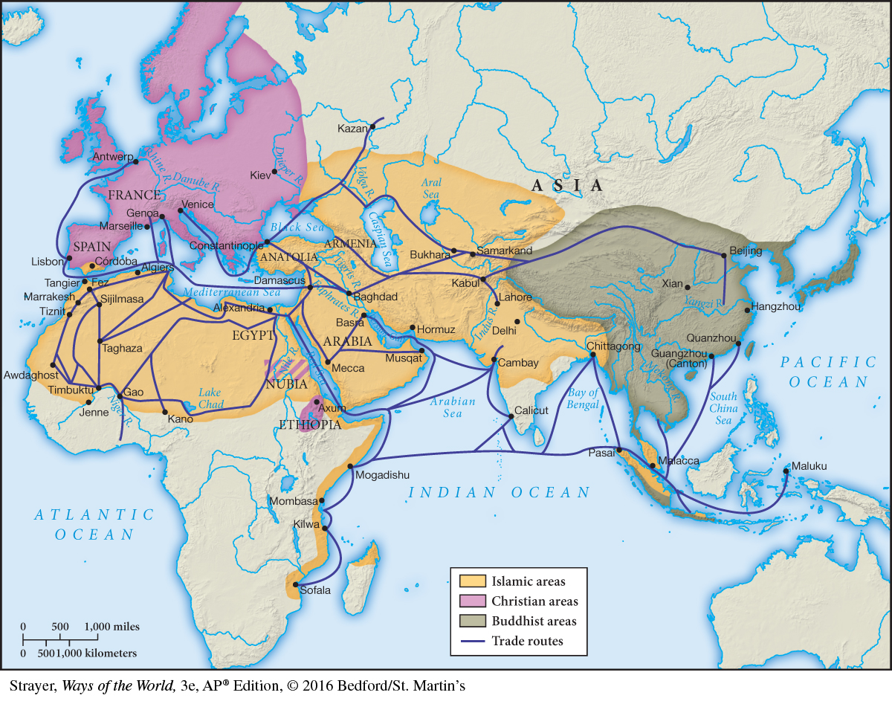

Map 12.6 Religion and Commerce in the Afro-Eurasian WorldBy the fifteenth century, the many distinct peoples and societies of the Eastern Hemisphere were linked to one another by ties of religion and commerce. Of course, most people were not directly involved in long-distance trade, and many people in areas shown as Buddhist or Islamic on the map practiced other religions. While much of India, for example, was ruled by Muslims, the majority of its people followed some form of Hinduism. And although Islam had spread to West Africa, that religion had not penetrated much beyond the urban centers of the region.